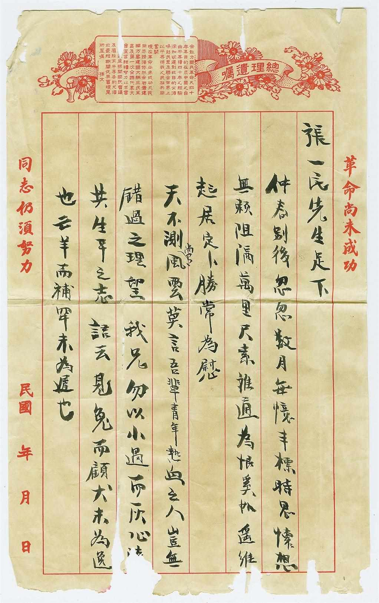
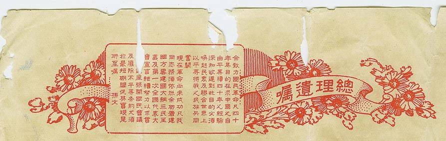

目录
首页

第 二 章
革命尚未成功
同志仍须努力
馆藏侨批档案介绍（二）
"天不测尚有风云，莫言吾辈青年热血之人，岂有错过之理……"
在汕头市档案馆馆藏侨批中，有一封吴乾祥寄给张一民先生的信，从字里行间我们仍然能看到那真挚的友谊和热血青年的壮志豪情。
馆 藏 原 件
庚六月十三日 · 吴乾祥寄张一民先生书
张一民先生足下：
仲春（1）别后，怱怱（2）数月。每忆丰标（3），时思怀想。无赖（奈）（4）阻隔万里，尺素（5）难通，为恨奚如（6）？遥维起居，定卜（7）胜常为慰。
天不测尚有风云，莫言吾辈青年热血之人岂无（有）（8）错过之理？望我兄勿以小过而灰心，□其生平之志。语云："见兔而顾犬，未为逸（晚）也；亡羊而补牢，未为迟也。"（9）
如我兄之才，何求不成？以弟愚见莫如改习英文，前程可以希望，此弟所为我兄之计划。夫人生如白驹过隙，勿涂以迁延岁月，坐失机会。如弟才疎（疏）学浅，斗胆直言，望祈原谅。兹去大洋银四元查收，望祈将经过情行（形）回音示晓。此请大安。
庚六月十三日
吴乾祥手书
（1）仲春：二月。
（2）怱怱：匆匆。形容时间过得快。
（3）丰标：风度，仪态。
（4）无赖（奈）：潮汕方言"赖""奈"同音，此处误书。
（5）尺素：指书信。
（6）为恨奚如：奚如为恨，还有什么能像这样更让人遗憾。奚，何也；恨，悔也。
（7）卜：料想。
（8）无（有）：潮汕方言"无""有"同音，此处误书。
（9）"见兔而顾犬……未为迟也"：看到野兔再回头呼唤猎狗，还不算太晚；丢掉了羊再去修补羊圈，也不算太迟。此句演化为成语"见兔顾犬"、"亡羊补牢"，比喻发现问题及时采取善后措施，以免酿成大错。（详见《战国策·楚四·庄辛谓楚襄王》）
从信中我们得知，张一民先生因为一些原因而失意，好友用"天有不测风云"对他进行劝慰，塞翁失马焉知非福。"吾辈热血青年岂无错过之理？"更是激励好友尽快从失意中走出来，尽快投入奋斗之中，字里行间满满的都是对友人的激励和真诚的劝慰，今天读起来仍让人感动。
除了信本身的内容，我们仍然可以从这封信的信纸上寻找到一些细节，比如页眉位置：
信 纸 页 眉

吴乾祥所用信纸页眉 · 印有总理遗嘱
总理遗嘱
SUN YAT-SEN'S LAST WILL
"余致力国民革命凡四十年，其目的在求中国之自由平等。积四十年之经验深知欲达到此目的，必须唤起民众及联合世界上以平等待我之民族共同奋斗。
现在革命尚未成功，凡我同志，务须依照余所著《建国方略》《建国大纲》《三民主义》及《第一次全国代表大会宣言》，继续努力，以求贯彻。
最近主张开国民会议及废除不平等条约，尤须于最短期间促其实现。
是所至嘱！"
—— 孙 文
孙中山在病危之中，仍念念不忘拯救中国、拯救民众，他在遗嘱中谆谆以此为嘱，把希望寄托于"唤起民众"，表现了他强烈的爱国之心。寄信之人选择这一信纸也必是深思熟虑，用"革命尚未成功，同志仍须努力"的伟大目标激励热血好友，可见其对好友、对国家真挚的情怀。